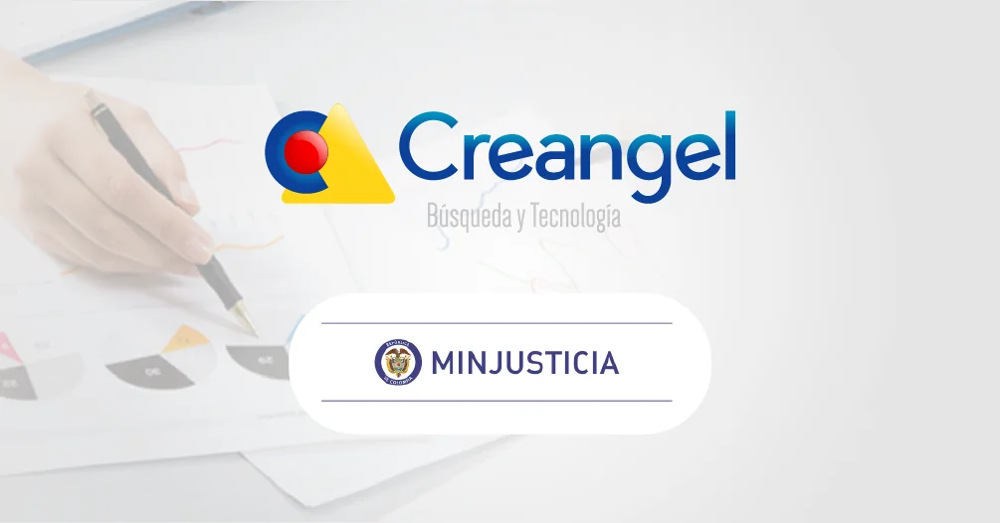
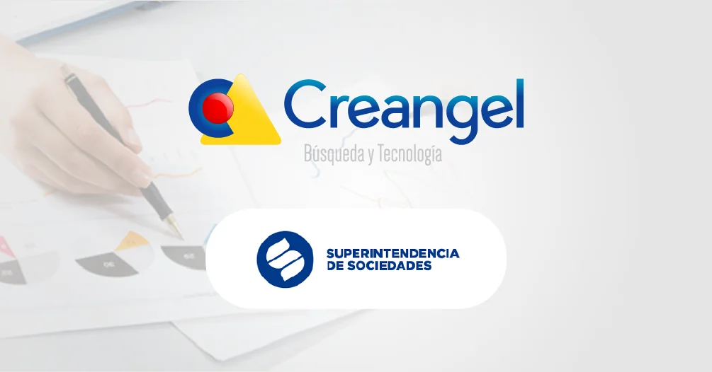
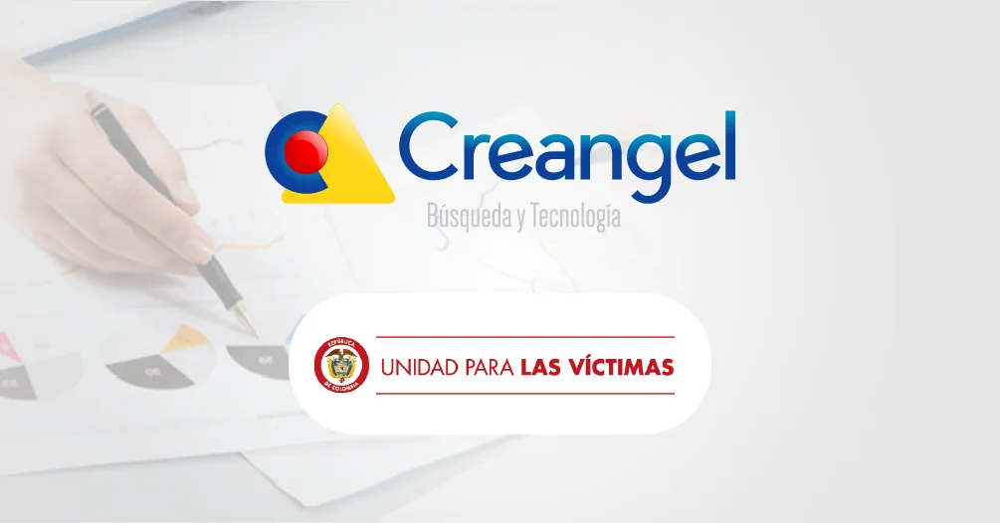
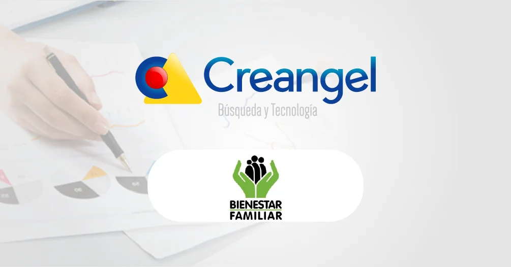
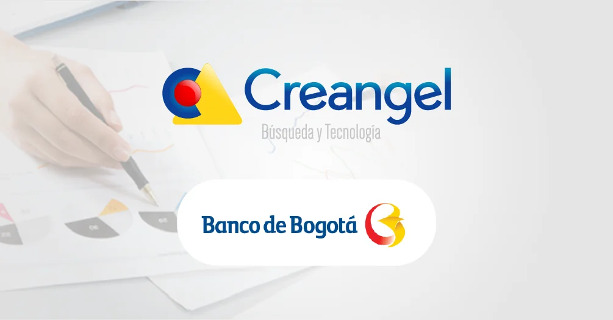

SUIN – JURISCOL
Gracias al éxito obtenido con la implementación de la Aplicación Basada en Búsqueda de Creangel en el portal LegalApp, el Ministerio de Justicia decidió implementar la herramienta para su portal SUIN – JURISCOL
Leer el casoConozca cómo distintas organizaciones utilizan IFINDIT en su trabajo diario.
Gracias al éxito obtenido con la implementación de la Aplicación Basada en Búsqueda de Creangel en el portal LegalApp, el Ministerio de Justicia decidió implementar la herramienta para su portal SUIN – JURISCOL
Leer el caso
LegalApp es el portal diseñado por el Ministerio de Justicia para todos los ciudadanos que necesitan conocer cómo adelantar un trámite o utilizar un servicio relacionado con Justicia Colombiana. Desde el lanzam
Leer el caso
La Aplicación Basada en Búsqueda del portal del Ministerio de Justicia ha permitido a la entidad mejorar los niveles de transparencia y acceso a la información, promover la participación ciudadana, promoción de
Leer el caso
Implementar herramientas tecnológicas de búsqueda de información empresarial, el cual les ayude a las personas para acceder y buscar de manera eficaz la información que resguarda la Entidad en todas sus aplicac
Leer el caso
Fortalecer la sección de documentos a través de una Aplicación de Búsqueda de Información y documentos de la Red Nacional de Información a través del Portal Web, estos documentos contienen información que ident
Leer el caso
La SIC requiere herramientas tecnológicas adecuadas que interactúen con los usuarios y ayude a cumplir cabalmente con las funciones encomendadas para la entidad. Implementar nuevos servicios de tecnología que f
Leer el caso
Lograr la excelencia en los servicios prestados en el portal web www.icbf.gov.co, implementando una Solución de Búsqueda dentro del portal que les permita encontrar la información de manera simultánea de los di
Leer el caso
Implementar herramientas tecnológicas que les ayude a promover la eficiencia y eficacia administrativa, consolidar una gestión pública moderna, eficiente y transparente al servicio de los ciudadanos, afianzar l
Leer el caso
El área de gestión de procesos del banco necesitaba implementar una solución de búsqueda de alto rendimiento para optimizar las búsquedas en sus sistemas de análisis de procesos (BPA- Mega) y del Call center (M
Leer el caso
Ser una entidad eficiente, lograr la excelencia en los servicios prestados y generar confianza, son objetivos comunes en las organizaciones. Es por esto que Gobierno en Línea promueve la inclusión social y la com
Leer el casoCuéntenos qué necesita encontrar, analizar u organizar. Conozca IFINDIT con el equipo de Creangel.